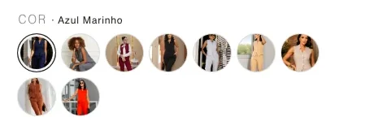
Cor em bolinha, com a foto da cor
Nove cores, nenhuma escondida. Clicou, a foto grande troca. Página da peça.
Plataforma nossa, em cima do WooCommerce, com painel feito pra quem vende roupa, não pra quem entende de WordPress. Vídeo da peça na página, provador virtual, cor em bolinha, entrega no mesmo dia. A Maslu Select roda nela: 5.900 pedidos e R$ 1,5 milhão nos últimos 12 meses.
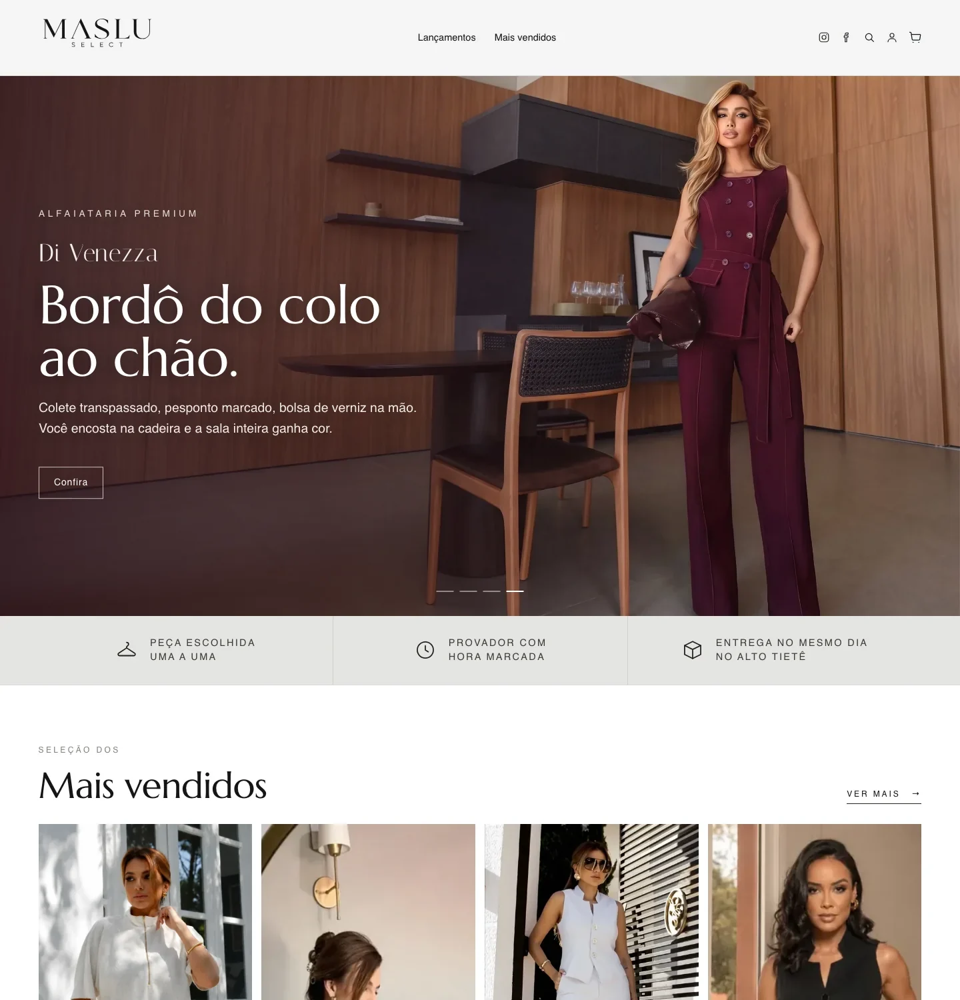
Tela de verdade da Maslu Select. Nada de mockup: é a loja que está no ar hoje.
A ficha tem 10 campos e escreve direto no WooCommerce. Tipo, nome e característica viram o título. Cor e tamanho viram variações com SKU sozinho.
Página de produto própria: cor em bolinha com a foto da cor, tamanho em botão com a numeração, estoque na cara, provador virtual e frete antes do carrinho.
Vídeo da peça na página do produto e nas bolhas de stories, com player em tela cheia e botão "Ver a peça". Sem plugin de terceiro: era R$ 49 por mês, hoje é nosso.
Pedidos pra separar, peças sem medida, estoque acabando. O painel diz o que fazer, não entrega um relatório de 40 abas.
Lidos da Maslu Select em setembro de 2026. Nenhum estimado.
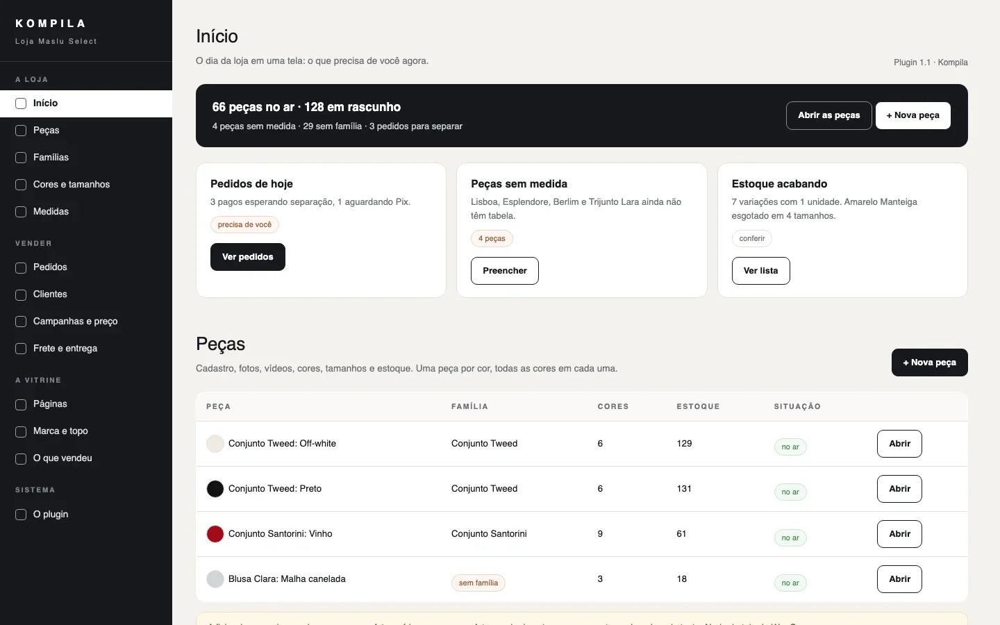
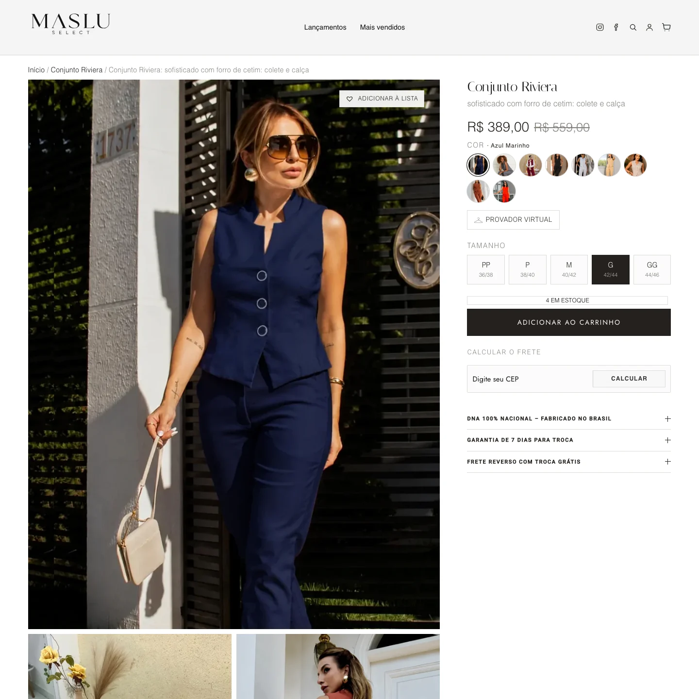
Não é tema comprado com plugin colado. É um plugin nosso, que escreve no produto, na variação e no termo oficial da loja. Quem entra depois encontra tudo no lugar.

Nove cores, nenhuma escondida. Clicou, a foto grande troca. Página da peça.
A cliente vê a peça no corpo antes do tamanho. Página da peça.
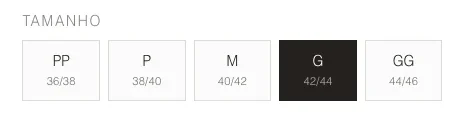
PP ao GG com 36/38 a 44/46. Esgotado aparece riscado. Página da peça.
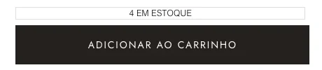
"4 em estoque" antes do botão. A cliente não descobre no carrinho.
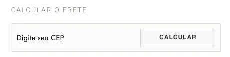
CEP, Correios, Melhor Envio ou retirada na loja. Entrega no mesmo dia no Alto Tietê.
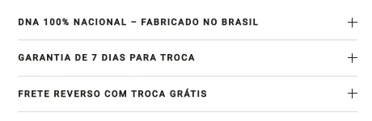
Sobre, detalhes, composição, medidas, entrega e troca. Aba vazia não aparece.
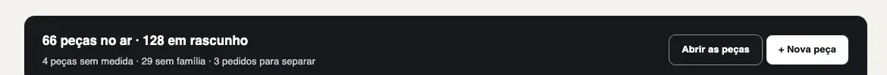
66 no ar, 128 em rascunho, 4 sem medida, 3 pedidos pra separar.
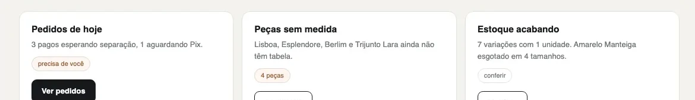
Pedidos de hoje, peças sem medida, estoque acabando. Cada um com a ação.
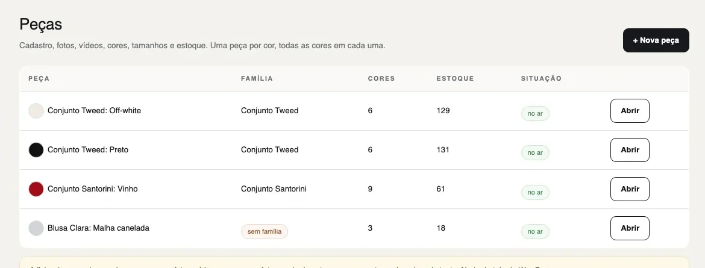
Família, cores, estoque, situação. Editar, duplicar, ver, excluir, em massa.
18 cadastros do Santorini viraram 1 com 45 combinações. 66 peças viraram 31, com redirect dos endereços antigos.
Baixa o CSV, conta na loja, sobe, vê a prévia, grava. Estoque duplicado é venda de peça que não existe.
Bolhas ou cartões, player em tela cheia, "Ver a peça". Substituiu um plugin de R$ 49/mês.
Pix com 5% de desconto, cartão em 12x (3x sem juros), boleto. Campo de celular e parcelas consertados no FunnelKit e no PagBank.
Dez blocos da loja no Elementor: hero, selos, lookbook, mais vendidos, instagram, história, visite. Troca os do tema na loja inteira.
Imagens com srcset, CSS e JS de plugin desligados na home. LCP 2,9 s na home.
Maslu Select, alfaiataria e tricot feminino, Suzano, SP. Vende pro Brasil inteiro pelo site e entrega no mesmo dia no Alto Tietê. Antes se chamava Labella Store: mesma dona, nome novo.
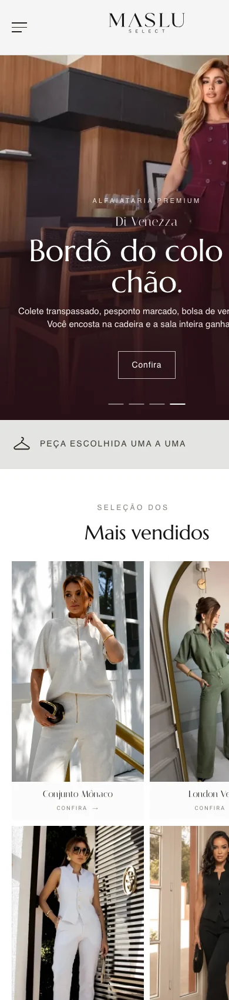
“Alfaiataria feminina escolhida uma a uma. Provador com hora marcada. Entrega no mesmo dia no Alto Tietê.”as três verdades da Maslu, como estão na loja
Quatro passos. O primeiro é medir o que você já tem.
Respostas curtas. O que não estiver aqui, a gente responde no WhatsApp.
Não. O painel foi desenhado pra quem vende, com as palavras da loja: peças, famílias, medidas, pedidos. O que é técnico fica com a gente.
Não. Lemos o catálogo e a base de clientes que você já tem. Na Maslu a loja já existia: entramos por cima, sem apagar pedido nem cliente.
Hoje a loja responde tamanho, estoque e prazo na página e leva a cliente pro WhatsApp da loja. O atendimento por IA 24 h é o kompila online, que está em construção e entra nela.
Pode ser o seu, gravado no celular, ou feito pela nossa equipe de design. O que importa é que ele entra na página da peça, na cor certa.
Depende do tamanho do catálogo, da migração e do que entra no escopo. O escopo é escrito antes, com data. Sem número inventado.
Comece pelo Diagnóstico: lemos o seu catálogo e a sua base antes de qualquer proposta.